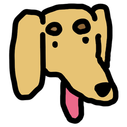

Dachshund Desktop Pet
A little dog that lives on your Windows desktop.
What it does
🐾
Play with it
Pet its head, rub its belly, pick it up and drop it. It wanders around, chases your cursor, gets the zoomies and sometimes steals your mouse.
📝
Daily to-do list
Every morning the dog drags your list out from the edge of the screen. Tick things off and it does a happy jump.
🍅
Pomodoro
A tomato timer next to the dog. It sits quietly while you focus and dings when it's break time.
💌
Messages
Friends send messages from their phone or their own dog. Yours runs over, barks, and shows the message in a bubble.
Install
- Click Download for Windows above.
- Right-click the zip → Extract All... → put the folder anywhere you like (for example Documents).
- Open the folder and double-click DachshundPet.exe.
- Give your dog a name. Done!
Windows says "Windows protected your PC"? That shows up for small apps without a paid code-signing certificate.
Click More info → Run anyway. You only need to do this once.
Phone app
Chat with friends, see your to-do list and change your settings from your phone. No app store needed: it's a web app.
- Open stupidllama.github.io/dachshund-pet/app on your phone.
- iPhone: in Safari tap Share → Add to Home Screen.
Android: in Chrome tap ⋮ → Install app. - On your computer, right-click the dog → 📱 Phone & friends → Link my phone, then type the code on your phone.
Questions
How do I close it?
Right-click the dog (or the tray icon next to the clock) → Quit.
The dog wandered off. How do I call it back?
Press Ctrl + Alt + D, click the tray icon, or open DachshundPet.exe again.
Can it start when I turn on my computer?
Yes: right-click the tray icon → tick Start with Windows. You can also make a desktop shortcut from the same menu.
Can I click things behind the dog?
Yes. Only the dog itself catches the mouse; the empty space around it lets clicks through.
How do I uninstall it?
Quit the dog, untick Start with Windows, then delete the folder.
To also remove its settings, delete
%APPDATA%\DachshundPet (paste it into the File Explorer address bar).Is it free? Where is the code?
Free and open source: github.com/StupidLlama/dachshund-pet. All versions are on the Releases page.